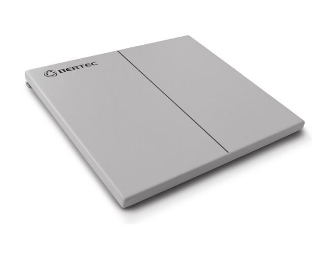

PSYC 422 Lecture 1
A/Prof. Deborah Apthorp
Slides are open source
Link for the HTML version of these slides (always up to date)

Outline
- 1.1: Things you need to know about PSYC422 (an incomplete list)
- 1.2: Psychology as a science - what characteristics of science are important?
- How is Psychology doing on those?
- Pseudoscience - how to spot it
- 1.3: Practical stats section:
- Resources
- Intro to jamovi and brief demo on my own data
Things you need to know about PYSC422
Assessments
- Online Quiz component - 20% (3 knowledge (m/c and short answer), 3 stats, mark = best 5).
- Discussion Board posts - 10% (about 1500 words, responses to prompts through trimester, min = 5 topics)
- Written assignment - critical thinking blog post - 30% (scaffolding workshop at Intensive)
- Final Exam - 40% (multiple choice and short answer, online)
Readings etc.
- These are on the Unit Guide (please read it before posting any questions on Moodle) and also set out in each Topic
- Textbook: Research Methods in Psychology (4th Edition) (open textbook)
- Specific chapter readings are set out for each week
- There will also be other weekly readings from various sources
- Just released & recommended - excellent book A Student’s Guide to Open Science
Intensive school - April 2023
- Held online from 21st - 22nd April (mandatory)
- Concurrent with PSYC 421
- There are NO ASSESSMENTS AT INTENSIVE!
- Also no formal lectures - set of interactive workshops and tutorials
- Includes “scaffolding” workshops for assignment.
Things to note (2023)
- New edition of open textbook (available as a paper book on Amazon too)
- “Flipped classroom” model for Intensive School (no lectures)
- All quizzes online, best 5 count
- Half knowledge, half stats
- You don’t need SPSS though! (jamovi is fine - you’ll pick it up quickly, very similar and free)
- There are a whole set of H5P learning modules for jamovi on Moodle if you want them! (in the Resources section)
My teaching philosophy
Psychology as a science
Science makes systematic observations
Does Psychology?
- Similar to knowing things from experience, but more systematic
- Including:
- Precise definitions
- Reliable and valid measuring tools
- Generally accepted methodologies
- A system of logic for drawing conclusions
Science produces public knowledge
Does Psychology?
- The objective scientist was believed to be almost machine‐like in the search for truth.
- In science this usually takes the form of defining terms and research procedures precisely enough so any other person can systematically repeat the study, presumably achieving the same observable outcome.
- Objectivity in psychological science has been a problem historically.
Science produces tentative conclusions
Does Psychology?
Related to data‐driven attitude: recognition that conclusions drawn from data are always tentative & subject to revision based on future research.
Tentative nature of scientific research often difficult for general public
People seem to believe outcomes of well‐executed research will be the authoritative & the “final answer”
BUT: James Heathers tweet

Science asks answerable questions
Does psychology?
Empirical questions can be answered through the systematic observations and techniques that characterise scientific methodology.
Science has theories that can be falsified
Does psychology?
- Empirical question -> hypothesis (prediction about outcome)
- A good theory must be precise to be disproven, at least in principle.
- This concept is often referred to as falsification.
")
BUT: HARKing
- “Hypothesising After Results are Known”
- Why is this a bad thing?
- The Texas Sharpshooter Fallacy (see also this post)
- Increases risk of Type I error (false positives)
- Original article (Kerr, 1998!)

Also but:
Does psychology have good theories?
- Psychology has long been criticised for being weak on theory
- See, for instance, Muthukrishna, M, and J Henrich. “A problem in theory.” Nature Human Behavior (2019).
- A really good Twitter thread on this topic - see below
- Eiko Fried on Twitter
Recognising pseudoscience
We can, right?
- Associates with true science
- Reliance on anecdotal evidence
- Sidesteps the falsification requirement
- Reduces complex phenomena to simplistic concepts
Recognising pseudoscience
We can, right?
- People in the late nineteenth century could send away to the New York firm of Fowler and Wells for a ‘Symbolic Head and Phrenological Map’ for 10 cents.
- For another $1.25, the head and map would be accompanied by a copy of How to Read Character: A New Illustrated Handbook of Phrenology and Physiognomy.
- Of course, we don’t believe that sort of thing any more - do we?
Science vs. pseudoscience


Papers & criticism
A more recent example

Another example: Ivermectin
- A good example of how misinformation spreads
- Desperation (pre-vaccine) led people to try many things
- A good article here about the Ivermectin story
- Many studies including clinical trials, but some larger studies later shown to be fraudulent (see Health Nerd on Twitter for more details)
- Meta-analysis looked good at first
- But garbage in, garbage out - later retracted.
Practical section (stats demos and resources)
FREE alternatives to SPSS
- jamovi (good for parametric and non-parametric stats - lots of add-ons including moderation/mediation - based on R)
- JASP (good for Bayesian statistics)
- Posit (formerly R Studio) (very powerful & flexible, fairly steep learning curve, great plots)
- PSPP - most SPSS-like but clunky
Learning resources
All free!
- Fantastic FREE book by Danielle Navarro about learning statistics with jamovi (more in here than just jamovi - some great info about stats and research methods)
- Online FREE course on jamovi with video tutorials (by datalab)
- For SPSS - YouTube is great!
- Statistics of DOOM YouTube Channel (thanks Bernie!)
Stats demo example
(from my own data)

Stats demo example
(from my own data)
- Force plate measures Centre of Pressure (CoP) as it moves about the centre of balance
- People generally sway more with eyes closed than open


Research on motor control in Parkinson’s disease
- Parkinson’s disease affects brain structures also implicated in postural control (cerebellum, brainstem, basal ganglia)
- Postural control is known to be affected (increased sway) in PD
- Our group is interested in tracking this across time to see if if can be a useful measure of disease progression
- We also measure cognitive functioning and use some more traditional clinical tests
Paper - now published in BMJ Neurology Open
- Apthorp, D., Smith, A., Ilschner, S., Vlieger, R., Das, C., Lueck, C. J., & Looi, J. C. L. (2020). Postural sway correlates with cognition and quality of life in Parkinson’s disease. BMJ Neurology Open, 2(2), e000086. https://doi.org/10.1136/bmjno-2020-000086
- Data and code all available here
- We’re going to use a slightly reduced version of the dataset to do some demos in jamovi - I’ll put that dataset up on Moodle